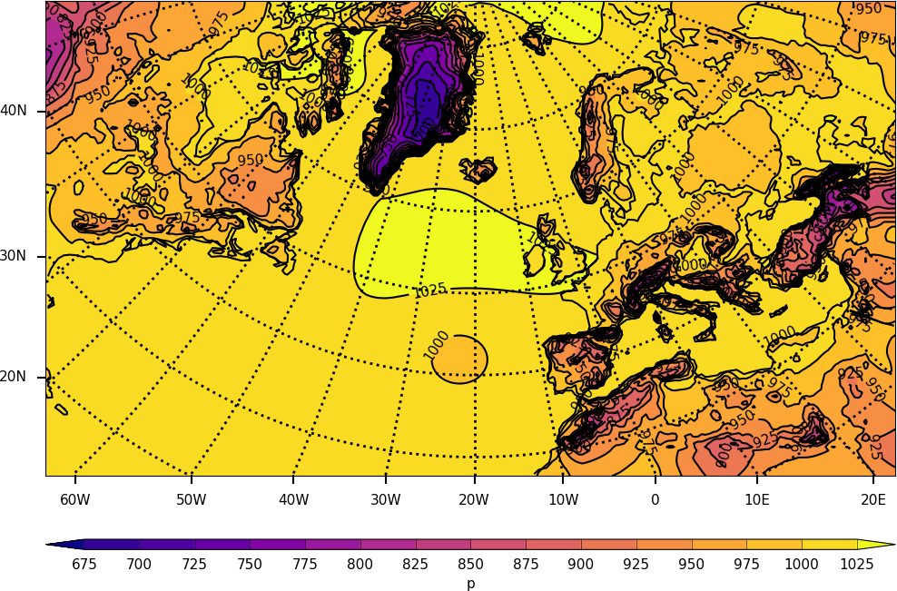
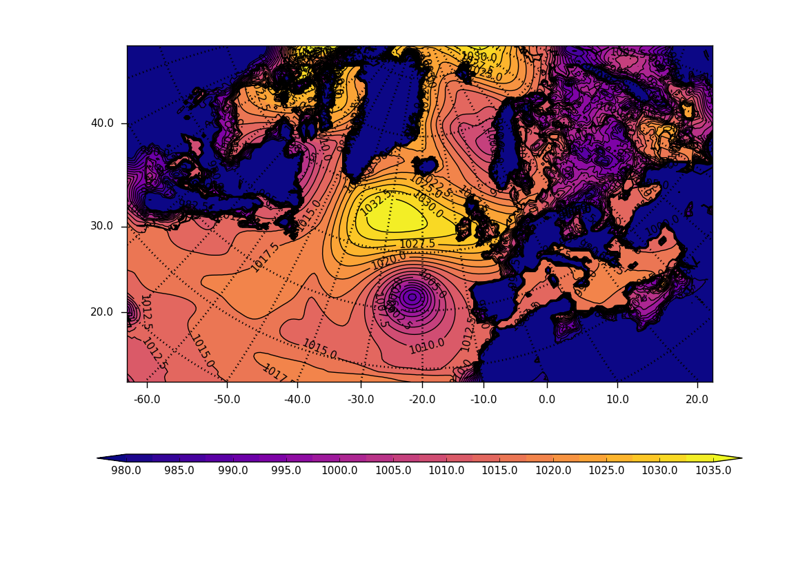

Rotated pole plots¶
Example 21 - rotated pole plot¶

import cf, cfplot as cfp
f=cf.read('/opt/graphics/cfplot_data/rgp.nc')[0]
cfp.cscale('gray')
cfp.con(f)
Example 22 - rotated pole plot from CF uncompliant data¶
The previous example uses the CF attributes to extract the rotated pole coordinates. If these are not available then the following example shows how to make the plot using more basic cf-plot commands.
{kind=link}
import cf, cfplot as cfp
import numpy as np
f=cf.read('/opt/graphics/cfplot_data/rgp.nc')[0]
data=f[0].array
xvec=f.item('dim1').array
yvec=f.item('dim0').array
xpole=160
ypole=30
cfp.gopen()
cfp.cscale('plasma')
xpts=np.arange(np.size(xvec))
ypts=np.arange(np.size(yvec))
cfp.gset(xmin=0, xmax=np.size(xvec)-1, ymin=0, ymax=np.size(yvec)-1)
cfp.levs(min=980,max=1035, step=2.5)
cfp.con(data, xpts, ypts[::-1])
cfp.rgaxes(xpole=xpole, ypole=ypole, xvec=xvec, yvec=yvec)
cfp.gclose()
Example 23 - rotated pole data on a cylindrical projection map¶
Here we extract the real longitude and latitude data locations from a rotated grid file and use these to make a cylindrical projection contour plot of the data. The ptype=1 flag is passed to the cf-plot con routine to indicate that the data is to be plotted on a map.
{kind=link}
import cf, cfplot as cfp, numpy as np
f=cf.read('/opt/graphics/cfplot_data/xjpgaa_ca072_byteswapped.pp')[0]
z=np.squeeze(f.subspace(model_level_number=1).array)
x=f.item('longitude').array
y=f.item('latitude').array
cfp.con(x=x, y=y, f=z, ptype=1)